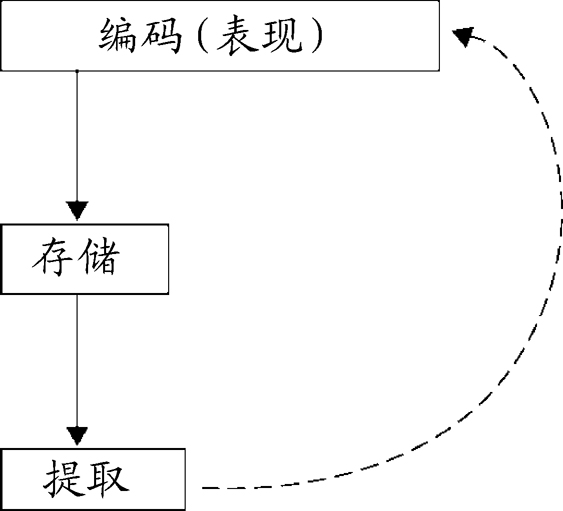
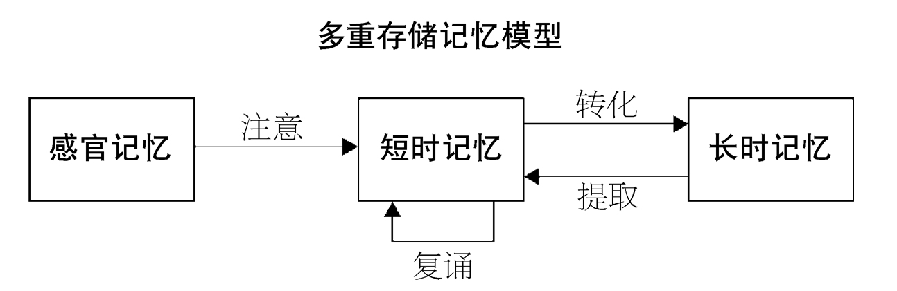
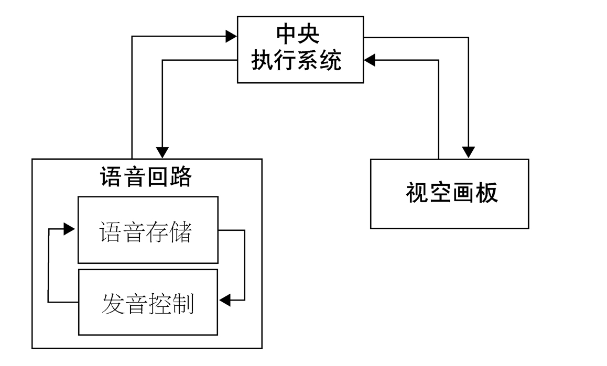

这一章将会探讨以下两个核心问题：记忆系统是如何运作的；我们如何定义记忆的各种功能组成。我们会阐明一个核心观点：任何记忆系统，无论是人类的大脑（它有时被称为“已知宇宙内最复杂的系统”）、计算机的硬盘、录像机，还是办公室里一只简陋的文件柜，如果要正常运行，都需要能做到三件事：编码、存储，以及有效地提取信息。如果这三道工序中有任何一道出现问题，记忆的运作就会失灵。讨论过这一点之后，我们会了解一下研究者们都是怎样对构成记忆的不同功能和工序进行定义的。
我们在生活中常会觉得这个人的记性好、那个人的记性差，在这样想的时候，我们不知不觉地把记忆当作一个单一的过程来看待。但这其实是错误的。过去的一百年中，对健康的受试者以及大脑受伤的临床病人的许多研究已经表明，记忆是由多个不同的成分所组成的。我将会运用类比来阐明短时记忆和长时记忆之间的关键区别——对于这种区别，无论临床医师还是外行人士都常常产生误解。接着我们会分别探讨短时记忆和长时记忆的不同功能组成。对于后面的几个章节，本章将会提供一个有助于理解的概念框架。
——莎士比亚，《哈姆雷特》
任何有效的记忆系统，无论是录音机、录像机、你计算机里的硬盘，还是一个简陋的文件柜，都需要能很好地完成三件事。它必须能够：
用文件柜打个比方：首先，你在某个地方存放了一个文件。那个文件就在那里，当你需要它的时候，你就会从文件柜里取出这个文件。但是，除非你拥有一套不错的检索办法，否则你就不容易找到这个文档。因此，记忆不仅涉及信息的接收和存储，还包括信息的提取。只有这三个组成部分协同合作、运行良好，记忆才能有效地工作。

图4 要探讨人类的记忆是如何运行的，编码、存储和提取之间的逻辑区别很关键
编码出现问题，通常与注意力不集中有关。存储发生问题，就是我们生活中所说的遗忘。在探讨提取的时候，我们常常需要区分两个概念：信息是否可用 ，以及信息是否可及 。比如，有时候我们想不起某个人的名字，但感觉这个名字就在嘴边。我们可能想得起这个名字的第一个字，或者名字的字数，但就是说不出整个名字，难怪人们把这种情况称为“话到嘴边，就是想不起来”。我们知道自己已经把信息存在某个地方了，我们可能还想得起其中的部分内容，所以从理论上说这个信息是“可用”的，但此时此刻，完整的信息对我们来说遥不可及。虽然人们的记忆中存储了大量的信息，这些信息在理论上一直存在，但通常只有其中的一小部分可以被随时提取、使用。
如果这三个组成部分（编码、存储和提取）中的一个或多个出现故障，记忆的运作就会失灵。在“话到嘴边想不起来”的情况中，是提取功能出现了问题。三个组成部分都不可或缺，无论哪一个都无法单独发挥作用，这就是记忆的基本逻辑。
在柏拉图的时代，人们是基于自己的感受和印象对人类的头脑进行推测的。直到现在有些人依然是这样，他们对有关人类大脑和心智的科学发现毫不在意，认为那些只不过是“常识”罢了。但如今我们有了来自实验的（通常被称为“实证性的”）发现，可以用作我们理论的基础。我们展开缜密的、严格控制的实验，用来搜集关于人类记忆运作方式的客观信息（参见第一章）。我们将会看到，其中一些已成定论的发现，恰与许多人所依赖的“常识”相悖。
为了理解记忆，实验研究者们运用了种种系统性技术，其中一种是将记忆这一宽泛的领域细分为作用不同的几个部分。想一想你上次进家门时的穿着。这样一种记忆，比起回想一年中哪几个月有30天，或者说出20到30之间的质数，或是记起怎么做煎蛋卷，有何区别？直观地讲，这些似乎确实是不同类型的记忆。但这样说的科学依据又是什么呢？事实上，过去一百多年中最重要的发现之一就在于：记忆是由多个部分组成的，而不是一个单一的实体。在本章以及书中其他章节里，我们会进一步讨论这些组成部分之间的区别。
在20世纪60年代，对记忆的细分开始通行，这种细分建立在计算机信息处理模型的基础之上。随着“二战”后信息技术的快速发展，人们对计算机处理过程中的信息存储条件的认识有了长足进步，并随后发展出了关于记忆处理的三阶段模型。其中，阿特金森和希夫林于60年代所提出的模型最为完善。在这些阶段模型中，信息首先被短暂地储存于感官记忆 中，随后又被有选择地转移到短时记忆 中。之后，又有更小的一部分信息进入了长时记忆 。
这些不同存储模式的特点概述如下。

图5 记忆的多重存储（或多种情态）模型，由阿特金森和希夫林在1968年首次加以描述。这一模型为理解记忆提供了一种非常有益的启发性框架
感官记忆似乎是在意识层面以下发挥作用的。它从各种感官那里获得信息，保留很短的时间，而在这短短的时间中我们将会决定去注意其中的哪些信息。所谓“鸡尾酒会现象”就是一个例子：在喧闹的环境中，你听到某个角落里有人说了你的名字，于是自动地将注意力转向他们的对话。另一个常见的情形是，我们有时会要求某人重复一个动作，或重复他说过的什么话，因为我们相信自己已经忘记了这些内容。但同时我们也发现，事实上，我们对先前的信息仍然是有印象的。在感官记忆中，我们所忽视的信息都会迅速丢失，无法再取回——从感官的角度来说，这些信息的消退就如同光线减弱、声音消散。所以，如果某人在说话而你没有注意听，有时候你也能抓住一些片断，但片刻之后，这些片段就会完全消失。
一些实验结果验证了感官记忆的存在。例如在斯珀林于1960年所进行的实验中，受试者在极短的时间（比如50毫秒）内会看到12个字母。虽然事后这些受试者只说得出四个字母，但斯珀林怀疑他们实际上有能力记住更多的字母，只是信息消失得太快，他们来不及复述出来。为了验证这一假设，斯珀林巧妙地设计了一种视觉矩阵，由三行字母组成。受试者在看到这三行字母后的极短时间内会听到一个声音，他们被要求根据音调的高低，有选择地复述视觉矩阵中某一行的内容。通过这种部分复述 的方式，斯珀林发现，人们可以回忆出任意一个包含四个字母的行列中的三个字母。这便意味着，在很短的时间内，12个字母中有将近九个是可能被复述出来的。
根据这一类的研究，研究者们推断出了感官记忆的存在。感官记忆可以非常短暂地存储大量不断涌现的感官信息，而大脑只会选择其中的一部分内容加以处理。储存视觉信息的感官记忆叫作图像记忆 ，储存声音信息的感官记忆叫作回声记忆 。感官记忆的普遍特点是丰富（就其内容而言）但非常短暂（就其存留时间而言）。
20世纪60年代所推崇的信息处理模型认为，在感官记忆之外还存在着一个或多个短时记忆系统，能将信息留存约几秒钟。我们对某些信息加以注意，便可以将其引入短时记忆（有时也被称为初级记忆 或短时存储 ）中。短时记忆能存储大约七项内容，比如拨打新的电话号码时我们用的就是短时记忆。因为容量有限，一旦短时记忆的空间被填满，旧的信息就会被新的信息所取代。短时记忆储存的是相对不太重要的内容（例如，某个今天需要拨打但以后不会再用到的电话号码），使用后便会逐渐消失，就像你打电话给电影院询问今天晚上放映什么电影，你只需要将电话号码记住一小会儿，之后就可以将它丢弃。
在科学文献中，言语短时记忆受到了相当多的关注。至少从某种程度上说，这种记忆的存在是从自由回忆的近因效应 推断出来的。例如，波斯特曼和菲利普斯曾要求受试者们回忆由10个、20个或30个单词组成的单词表。如果受试者们在刚刚看过单词后便立即开始回忆，他们对单词表末尾部分的记忆会比单词表中间部分的清晰许多，这一现象被称为近因效应。但如果回忆测试延后了哪怕仅仅15秒，而且在延迟的过程中受试者进行了某种言语行为（例如倒数数字），这一效应就不再出现了。研究者对这类发现的解读是，近因效应的发生是因为短时记忆的容量有限，当人们从短时记忆中提取最新存储进来的几个记忆项，便会发现这些内容的记忆效果最佳。
艾伦· 巴德利在20世纪60年代曾进一步提出，言语短时记忆主要以声音或语音的形式来存储信息。其他学者曾观察到，短时回忆中出现的错误往往是语音上的混淆，这从侧面支持了巴德利的观点。即便记忆材料最初是通过视觉形式呈现的，这种现象依然会发生，这便意味着信息在存储的过程中被转化成了语音编码。例如，康拉德和赫尔就证明，在以视觉形式呈现给受试者之后，发音相似的字母序列（如P、D、B、V、C、T）比发音不相似的字母序列（如W、K、L、Y、R、Z）更难被准确地回忆出来。
持续地关注某些信息，在大脑里反复思考它或背诵它，就能将这些信息转化为长时记忆（有时又被称为次级记忆 ）。长时记忆似乎有无穷的容量。较为重要的信息（比如搬家后需要记住的新电话号码，银行密码，或者你的出生日期）都被存放在长时记忆中。记忆的长期特性将是本章讨论的重点。
短时记忆以语音形式存储信息，而学者们认为长时记忆主要是根据信息的意义 来实现存储的。因此，如果选择一些有意义的句子给人们看，再要求他们进行回忆，他们通常并不能复述出完全一样的用词，但能够说出句子的大意或要点。正如我们在第一章中探讨巴特利特的研究时所看到的，“自上而下”人为添加的意义往往会导致记忆的扭曲和偏差，就像人们复述“鬼的战争”那则故事时所表现出的一样。我们在第四章探讨目击者证词 时，会再回过头来讨论长时记忆的偏差。
上文简要提到的阿特金森和希夫林所提出的记忆三阶段模型以及类似的其他模型，可以简化体现复杂的人类记忆的某些特点。然而，正是由于记忆是如此复杂，我们需要不断对这些模型进行调整，从而让它们吸纳新的观察结果。
前面提到的信息处理模型提出了两个基本假设：一、信息必须首先进入短时记忆，然后才能进入长时记忆；二、练习复诵短时记忆中的信息，不仅可以将信息留存在短时记忆中，也使它更有可能转化为长时记忆。但是，第一种假设因为一些重要临床案例的发现而受到了挑战。案例中，一些脑部受伤的患者的短时记忆能力表现出严重的损伤，也就是说，根据阿特金森和希夫林的模型，他们的短时记忆存储环节受到了严重破坏。然而，这些患者似乎在长时记忆方面并不存在障碍。阿特金森和希夫林模型的第二种假设也受到了其他研究的质疑，在一些研究中，受试者用更长的时间来背诵单词表末尾的单词，但他们对这些内容的长时记忆并未体现出任何改善。在某些情况下，研究者们发现，在多种不同场合接触相同的信息（按照合理的假设，这也就意味着更多次的重复练习）并不足以使人记住这些信息。就像我们在第一章中所说的，人们每天都会接触到硬币，但当他们回忆硬币上人物头像的细节时，他们的表现并不好。
区分长时和短时记忆的其他论据也引发了争议。比如我们之前所讨论的，自由回忆中的近因效应一直被归结为短时记忆运作的结果，因为如果在回忆前的几秒钟内要求受试者倒数数字或进行其他语音活动，这一效应便会减弱。然而，当受试者尝试记住这些单词，并将单词表上的词语进行倒数后，他们对末尾几个单词的记忆仍然比中间位置的单词更为清晰。这一类的发现并不符合阿特金森和希夫林的模型，因为按照他们的模型，短时记忆应该被倒数这一任务“填满”，从而无法观察到任何近因效应才对。语义编码（即基于语义的信息处理）在合适的情况下也会在短时记忆中显现，这说明语音编码并非短时记忆中信息表述的唯一形式。
阿特金森和希夫林的信息处理模型所存在的问题得到确认后，出现了两种主要的回应。其中一种思路是，根据短时记忆模型的已知局限对模型本身进行改善。巴德利及其同事的研究就与这种思路密切相关，同时他们还力图进一步描述短时记忆在认知过程中的作用。这一研究视角上的改变催生了巴德利开创（随后又加以修订）的“工作记忆”模型。而对阿特金森和希夫林模型的另一种回应思路关注的问题更为普遍。这种思路质疑的是为何该模型要将关注焦点放在记忆的存储及其容量的局限上，并提出应该采取另一种研究路径，重点关注记忆的信息处理过程，并研究信息处理过程对记忆成果的影响。
无论哪一种记忆模型最令人信服，许多关于记忆的理论都对短时记忆和长时记忆进行了宽泛却根本的区分。我们将会看到，支持短时与长时记忆二元区分的论证来自两方面，既有一系列针对正常健康个体而进行的实验，也有对脑部受伤、记忆存在缺陷的病人的研究。基础生物研究也提供了集中的证据，支持短时和长时记忆之间存在区别的观点。
进一步考察短时记忆，我们会发现短时记忆和工作记忆之间的区别往往比较模糊。短时记忆先前曾被或多或少地看作一种被动的 过程。但现在我们知道了，人们在短时记忆中并不仅仅是寄存某些信息而已。如果我们在短时记忆中保存了一句话，我们通常能够倒背出这句话，或者背出句中每个单词的首字母。工作记忆这一术语强调的便是短时记忆的这种活跃、主动的特征，因为留存在那里的信息还经过了思维的某种处理或运作。“工作记忆”和“短时记忆”这两个术语还经常被作为“意识”的同义词来使用。这是因为我们所意识到的东西（也就是我们的头脑此时此刻所抓住的信息）都在我们的工作记忆范围之中。
广度 （span）这个术语通常用来指代一个人能够在短时记忆里存储信息的容量。20世纪50年代，乔治· 米勒曾将短时记忆的典型容量定义为7±2个单元，这是对健康的年轻人而言的。识记单词表的例子可以说明短时记忆的机制：我们对单词表末尾的几个词记得最清楚，因为这些单词仍然存储在我们的短时记忆中。这就像莎士比亚在《理查二世》中所写的，“像宴席最后的甜食，意味最悠远，比任何往事更能铭刻在心里边”。还有些专家认为，短时记忆的广度与语音速度有关，一个人能够越快地一口气说出单词、字母或数字来，他的短时记忆的广度就越大。
现在已有充分的证据表明，工作记忆并不是单一的实体，而是由至少三个部分组成的（见图6）。巴德利在他影响甚广的工作记忆模型中对这些组成部分加以形式化，将其定义为中央执行系统 和两个附属子系统——语音回路 和视空画板 （visuospatial sketchpad）。后来，巴德利在修订后的工作记忆模型中又增加了情景缓冲区这一概念。对于这些组成部分的功能角色，巴德利提出：1）由中央执行系统控制注意力，并协调附属的子系统；2）语音回路包括了语音存储和发音控制过程，也使内部言语能够进行；3）视空画板负责建立和处理心理图像；4）情景缓冲区（图6中未标注）用于整合处理工作记忆中的材料。
有大量研究针对语音 （或者说发音 ）回路而展开。研究者普遍认为，语音回路对于儿童的语言发展、对成人理解复杂的语言材料都起着重要的作用。许多实验证明，人们在记忆广度方面的表现通常在很大程度上取决于发音编码的使用，比如你能正确复述的单词个数取决于单词的复杂程度。这一类的发现证实了语音回路的存在。在实验中，研究者采取一种叫作“发音抑制”的技术，让受试者大声重复或者默诵一个简单的声音或单词，比如“啦啦啦”或是“这这这”，这样可以暂时阻止语音回路吸纳新的信息。对比使用或不使用发音抑制手段的情况下受试者的表现，就可以看出语音回路的作用。

图6 1974年，巴德利和格雷厄姆· 希契提出了工作记忆的模型，将短时记忆细分为三个基本组成部分：中央执行系统、语音回路和视空画板
语音回路的容量有限。那么到底是记忆项目个数的限量还是时间限量能更好地描述语音回路的容量呢？研究表明，一个人的记忆广度 （即他在听完后能够正确复述的单词个数）是由他说出这些单词所需要的时间来体现的。在短时记忆测试中，“cold（感冒）、cat（猫）、France（法国）、Kansas（堪萨斯州）、iron（铁）”这样的短单词列表，要比“emphysema（肺气肿）、rhinoceros（犀牛）、Mozambique（莫桑比克）、Connecticut（康涅狄格州）、magnesium（镁）”这样的长单词列表容易记忆得多，尽管这两个列表拥有同样的单词数量，并选自相同的语义范畴（分别为：疾病、动物、国家名、美国州名和金属名）——这就是词长效应 。但是，如果受试者在学习这些单词时进行了发音抑制，那么词长效应便会消失。另一个有关词长效应的例子是，在不同的语言中从1数到10需要用的时间不同：对于使用不同语言的人，其数字记忆的广度与他们用各自语言的发音读出数字的速度紧密相关。这些发现以及其他相关研究表明，语音回路的时间（而不是记忆项目）容量是有限的。
与语音回路相反，视空画板提供的是暂时存储和处理图像的媒介。有研究表明，就短时记忆的容量而言，并行的视觉、空间记忆任务会相互干扰，由这一现象可以推断出视空画板的存在。如果你试图同时完成两个非语言的任务（例如，同时轻拍头顶和按摩肚皮），两个任务结合在一起有可能令视空画板超负荷运转，于是这两个任务都完成不好（相较于两个任务分别单独执行时的表现而言）。科学研究显示，人们下国际象棋的时候会用到视空画板，这表明短时空间记忆在处理棋盘布局的任务中发挥着作用。
迄今为止，巴德利的工作记忆模型中描述得最不清晰的部分就是“中央执行系统”了，它的作用被认为是协调工作记忆所需要的注意力和运转策略。如果语音回路和视空画板在同时运转，例如，当你试图记住一组单词并同时进行一项空间运动（正如我们在一些实验中要求受试者去做的那样），这时候中央执行系统便可能用于协调这两者的认知资源。在对中央执行系统进行研究时，巴德利和他的同事们就采用了这样的双项任务法：受试者所做的第一项任务旨在让他们的中央执行系统保持在忙碌状态，而研究者则对第二项任务的执行情况进行衡量，从而判断中央执行系统是否也参与了第二项任务。如果第二项任务的完成情况由于与第一项任务同时进行而变差了，则可以推断出中央执行系统也参与了第二项任务。为了让受试者的中央执行系统保持在忙碌状态，研究者设计出多种任务，“生成随机字母序列”便是其中一种。受试者被要求编写出许多字母序列，但需要避免实际生活中具有意义的字母序列，例如“C—A—T”、“A—B—C”或者“S—U—V”。受试者在编写字母序列的同时不断留意着字母的选择，这使得中央执行系统保持忙碌状态。实验表明，专业国际象棋棋手对实际比赛中棋子位置的记忆表现会受到这种字母生成任务的干扰，但却不会受到上文提到的发音抑制手段的影响。这说明，记忆棋子位置的任务会使用到中央执行系统，但并未使用语音回路。从临床角度来说，如果中央执行系统的运行出现中断，其后果从“执行缺陷综合征”（这与大脑额叶的损伤有关，参见第五章和第六章）中的无组织、无计划行为中可见一斑。
在最新版本的工作记忆模型中，巴德利提出了“情景缓冲区”这一功能组件。根据巴德利修订后的模型，从长时记忆中提取的信息通常需要与当前的需求相结合，而这些需求是由工作记忆来实现的。巴德利在2001年的论文中将这一认知功能归结为情景缓冲区的作用。巴德利举了一个例子：我们有能力想象一头大象玩冰球的样子。他提出，我们有能力超越长时记忆所提供给我们的关于大象和冰球的信息，进一步去想象这头大象是粉色的，想象大象握住球棒的样子，甚至想象它可能在球场上打什么位置。因此，情景缓冲区能让我们超越长时记忆中所存储的现有信息，用新的方式将信息组合起来，从而用这些信息去创造新鲜的情境，并基于这些新情境采取未来的行动。
工作记忆可以被比作你的台式电脑的内存容量。当前运行的操作占用了内存，也就是电脑的“工作记忆”。而电脑的硬盘就好像长时记忆，你可以把信息放到硬盘上无限期地存储，即便你晚上将电脑关机，信息仍然存在那儿。关机类似人的睡眠。经过一夜的良好睡眠，第二天早晨醒来，我们仍然可以访问存储在长时记忆中的信息（比如我们的姓名、出生年月、我们有多少兄弟姐妹，以及在过去某个特别多彩的日子里所发生的事情）。但是，当我们早上醒来，通常想不起入睡前的工作记忆中的最后一些想法，因为这些信息通常不会在我们睡着前转移到长时记忆中。如果我们恰恰在进入梦乡前的几分钟内想到一个很棒的主意，可能就比较让人沮丧了。还有一个与此相关的类比：给一家先前从未去过的餐厅打个一次性的电话，这时使用的是短时记忆；与此不同的是，有时我们会创建新的长时记忆，比如当我们搬了新家，就需要创建对新家的电话号码的记忆。
关于电脑磁盘驱动器的比喻也有助于我们理解记忆的编码、存储和提取之间的区分。想一想互联网上存在的海量数据。这可以被想象成一个巨大的长时记忆系统。但是，如果没有搜索和提取互联网信息的有效工具，那些信息就是根本无用的：虽然理论上这些信息是可用的，但当你需要它们时，是否真的可以获取这些信息？这就是为什么当谷歌和雅虎这样的高效搜索工具出现，它们为近年来互联网的使用带来了巨大转变。
说完了工作记忆以及学者们所提出的工作记忆流程组件，我们现在来探讨长时记忆的不同功能要素。研究者提出这些不同的要素是为了有效阐述相关研究的结果，而这些文献是在对健康个体以及大脑受到不同损伤的个体进行评估后得到的——这两类来源都为人类记忆的组成情况提供了宝贵的信息。
心理学家提出的一种可能比较有用的区分是关于情景记忆和语义记忆的，这一区分在第一章中已经提及，它们代表着两种不同的可以有意识取用的长时记忆。具体来说，图尔文曾提出，情景记忆涉及对具体事件的记忆，而语义记忆从本质上来说关系到对世界的一般认识。情景记忆包括对时间 、地点 以及事件发生时的内心情绪 的回忆。（自传式记忆 ，即对个体过往经历的记忆，代表了情景记忆的一个分支，近年来受到了大量关注。）
简单来说，情景记忆可被定义为你对自己经历过的事件的记忆。这些记忆自然往往包括你经历这些事件时的相关具体情形。回想你上周末做了什么，或者记起你参加驾驶考试的过程中发生的事情，这都是情景记忆的例子。
情景记忆和语义记忆既存在着差异，又彼此相互作用。语义记忆是对事实 和概念 的记忆，它可以被定义为与接收信息时的具体情形无关的知识。事实上，我们常常无意识地将情景记忆和语义记忆结合混用。例如，当我们试着回忆自己婚礼当天发生的事情，我们对那一天的记忆很有可能既包括对婚礼的期待心情，也包括对典型 婚礼流程的语义记忆。
以下的例子可以说明什么是语义记忆：
这些问题的难度不等，但它们都需要发掘我们所积累的关于世界的大量一般性知识。我们在一生中逐渐积累着这些知识，往往把它们看成是理所当然的而不再留意。相反，如果我问你昨天早餐吃了什么，或者你上一次生日那天发生了什么，你的回答就有赖于情景记忆，因为我问的是发生在你生活中的具体事件或情景。你对于今天早上吃早餐的记忆会是情景记忆，涉及你什么时候、在哪里吃的早餐，以及吃了什么；但是，记住“早餐”这个词的意思，这就涉及语义记忆。所以，你当然能够确切地描述“早餐”一词是什么意思，但你很可能已经想不起来自己是什么时候、如何学会了这个概念的，除非你最近刚刚学会了“早餐”这个概念。当然，你一定早在童年时就学会了“早餐”这个概念，但总有一些其他的概念是你最近刚刚习得的。情景记忆是如何随着时间流逝“转化”成为语义记忆的，这一课题至今仍然在引发大量的研究兴趣和猜想。试想，你是在某一具体情景下第一次得知珠穆朗玛峰是世界最高峰的，然后渐渐地，你又反复接触过几次这个信息，经过一段时间后，这一信息转化成了一条语义信息。
语义记忆和情景记忆是否真的各自代表着独立的记忆体系，这点仍然不能确定，但区分这两者有助于有效地描述不同的临床记忆障碍，有的记忆障碍影响前者多些，有的则影响后者多些。研究者已经发现，某些脑部障碍更可能影响语义记忆，例如“语义性痴呆”。相反，恩德尔· 图尔文提出，所谓的“遗忘综合征”以情景记忆的选择性损伤为特征，而与语义记忆无关（见第五章）。
学界似乎已经达成普遍共识，在有意识的记忆之外还存在着第三种长时记忆——程序记忆 （例如记住骑自行车需要执行的一系列必要的身体操作步骤）。同样地，似乎也有一些脑部障碍更容易影响程序记忆，例如帕金森病。也有一些理论提出，程序记忆不应当被看作一种同质的记忆体系，它其实是由几种不同的子系统所组成的。
研究者们对不同类型的记忆所作的另一个常见区分是关于外显和内隐记忆的。这一思路与上文所讨论的情景、语义及程序记忆框架有一些共同点。外显记忆指的是在回忆的时刻能够清楚意识到自己所回想的信息、经历或情形是什么。有的研究者也将这种记忆体验称作“回想记忆”。外显记忆与之前所讨论的情景记忆有许多可类比之处。
与外显记忆相反，内隐记忆是指先前的经历对后来的行为、感受或想法造成了影响，但我们并未有意识地回想起先前那些经历。比如，一天早晨你在上班路上经过了一家中餐厅，到了那一天的晚些时候你可能会想出去吃顿中餐，却没有意识到这一意向是受到了早晨经历的影响。
一些针对“启动效应”（priming effect）而开展的研究可以说明内隐和外显记忆之间的区别。不少研究启动效应的实验运用了一种叫作“限时残词填空”的任务（例如.e_e_h_n_；翻到46页去看看你是否正确地将这个词填写完整了），对健康的个体而言，最近遇到过的单词总是能比新的单词填得更快、更有把握。神奇的是，即使人们并不能有意识地想起看过的单词，而只是使用他们的内隐记忆，他们同样能更好地完成填空任务。另一个区分内隐和外显记忆的补充论证来自对失忆症 患者的研究。对这些病人来说，患失忆症意味着他们不能有意识地认出先前呈现给他们的词语或图片，但是，同健康的个体一样，他们同样能够更轻松地填出先前看到过的词语。这些研究提示出两种记忆过程在功能结构方面的根本不同，差异便在于是否牵涉到对先前事件的有意识回想。
进一步的证据支持了这一观点。例如，在20世纪80年代，拉里· 雅各比进行了一项研究，其中包括两方面的测试：“再认”（有意识地回想起学习过的信息）和“无意识回忆”（这是对知觉辨认任务的测试，例如辨认出先前曾迅速闪现的词语）。雅各比还操控了实验中目标单词的呈现方式。每个目标词将通过以下三种方式中的某一种来呈现：1）没有上下文语境，单独出现（例如，单独显示“女孩”一词）；2）同时显示目标词的反义词作为上下文语境（例如，同时显示“男孩”和“女孩”）；3）受试者根据所显示的单词说出其反义词（例如，显示“男孩”，由受试者说出“女孩”）。
随后进行的外显记忆测试中，研究者将目标词和新的单词混合呈现给受试者，要求他们辨别哪些词语是他们之前接触过的（“接触过”的单词包括看到过的以及受试者自己说出的词，像上一段中所描述的那样）。而在内隐记忆测试中，目标词和一些新词一起被呈现给受试者，一次呈现一个词，每个词只出现很短的时间，受试者被要求辨别是否接触过这些词。
实验的结果如下：就外显再认而言，没有上下文的情况下成绩较差，受试者参与说出词汇的情况下成绩较好；有趣的是，在内隐知觉辨认的任务中，情形恰恰相反！两组测试的结果相反，这便意味着相应的内在过程（即内隐记忆和外显记忆）是十分不同的，可能涉及相互独立的不同记忆机制。
上文描述的实验是一个很好的例子，它说明设计精巧的实验可以帮助我们确立不同心理过程之间的关键区别，而仅仅依靠反思内省是无法做到这一点的。相关领域内另一个精密、系统的研究范例是安德雷德等人对全身麻醉的人进行的研究。结果表明，尽管被麻醉的人当时并没有意识，对于麻醉过程中呈现给他们的材料，他们依然会在后来体现出内隐记忆。有了这样的实验结果，看来很有必要建议全麻手术的医务人员特别留意自己的言论，不要随便议论麻醉中的病人。除此之外还有一些研究表明，商业广告可能主要是通过影响内隐记忆来实现目的的。实验显示，相对于从未看到过的广告，人们会觉得之前看过的广告更吸引人，这种现象被称为“曝光效应”。
内隐和外显记忆的二元区分，体现了学者们所提出的两种记忆系统的不同（可参看福斯特和耶利契齐于1999年发表的论文，其中有对这一课题的更专业、全面的概述）。两种记忆系统的区别常常体现为它们负责不同类型的记忆任务 ，同时，这种区别也很可能与记忆任务间的区别混淆起来。不同的记忆任务，可能会程度不等地涉及不同的功能过程。有些记忆任务需要人们思考意义和概念，这些通常被称为由概念驱动的记忆任务 。比如，如果你仔细看过一组词语之后被要求记住它们，你会明确地回想这些词语本身。与此同时，你也可能自发地想起这些词语的意思，这便是由概念驱动的任务。还有一类任务要求人们专注于记忆材料本身，这通常被称为由材料驱动的记忆任务 。如果你的任务是要补全残词（例如e_e_h_n_），并且不能查看先前看过的词语，那么，先前的学习过程的影响可能更多地是内隐而非外显的。你填写单词的时候主要依靠的是字母的视觉排列，而较少（甚至完全没有）使用词语的意义，这便是由材料驱动的任务。
分别依赖外显和内隐记忆的这两类任务，有时也被分别称为直接 和间接 的记忆任务。要区分不同记忆任务的种类（概念驱动相对于材料驱动、直接任务相对于间接任务），以及被测试的记忆组成部分的类型（外显或内隐），都是非常具有挑战性的。事实上，许多研究者都认为没有哪个记忆任务是真正“纯粹”地属于某一记忆过程的，每个记忆任务都会经由内隐和外显过程的综合协作而完成，记忆任务之间真正的不同在于这两种记忆过程在其中所占的不同比例。
与外显和内隐记忆之间的区别相关的，是执行某种记忆任务时的记忆体验类型。有学者提出，一个人是“记得”某事还是“知道”某事，两者之间存在着确切的区别。在实验中，“记得”被定义为受试者拥有这样的现象体验：他们的确在先前的记忆测试中看到过那些特定单词。相反，某人也许只是“知道”某个词语在先前的词语表中，却没有具体回想起那个词。这种“记得”和“知道”的区分是由恩德尔· 图尔文首次提出的。在他的研究中，图尔文要求受试者对每个答案进行如下判断：1）是否记得自己曾经看到过该词语；2）是否只知道该词语曾出现过，却想不起当时的具体情形。加德纳、加瓦及其同事由此展开了一系列研究，在许多不同的实验条件下对“记得”还是“知道”进行判断、区分。
其间的差异若要以客观语言进行描述，恐怕有些困难。不过，一些实验操作已被证明能对“记得”或是“知道”产生不同的影响。例如，研究表明，语义处理（这一过程更强调词语的意思）会比语音处理（这一过程的重点在于词语的发音）引起更多的“记得”反应。但是，就“知道”反应而言，语义处理和语音处理所得到的结果并没有多少差别。
关于记忆（尤其是长时记忆）有一个很有影响的补充性理论框架，这便是记忆的处理层次框架。与记忆的结构模型不同，这一框架强调的是记忆的加工处理过程的重要性，而不是记忆的结构和容量。处理层次框架的思路是由弗格斯· 克雷克与鲍勃· 洛克哈特在实验心理学文献中首次阐述的。有趣的是，在某种意义上，小说家马塞尔· 普鲁斯特早已总结出了这一理论的主要原则，他曾写道：“那些我们不曾深入思考的东西，很快就会被忘却。”克雷克和洛克哈特提出，记忆的质量取决于我们在记忆编码的那一刻信息处理的质量。他们描述了不同的处理层次 ，“表面”层次仅仅处理记忆材料的物理特性，“较深”的层次涉及记忆材料的语音特性，而再深一些的层次则涉及对材料的意义进行语义编码。
随后的许多正式实验都表明，就测试中的记忆表现而言，“深层次”的信息编码处理要优于“表面层次”的处理。此外，通过语义处理对材料作进一步阐释，可增进学习效果。这是什么意思呢？举个例子，假设你被要求学习一组词语，并且需要1）给出列表上每个词语的解释，或者2）说出每个词语令你产生什么样的联想。这两种情况都要求你对这组词语进行语义处理。你在情形1）或情形2）下通常都能更好地记住这组单词。而如果你被要求完成一个较“浅”的、和语义无关的任务，例如3）给列表上的每个词写出一个押韵的词语，或者4）给每个词语中的每个字母标注上它在字母表中的排位序数，那么你的记忆表现则会较差。
换言之，如果我们看见了单词“DOG”，我们可能仅对其进行表面的处理，留意到这个单词是大写的。另一方面，我们也可能在语音层面进行处理，想起它与“frog”和“log”押韵。又或者，我们也可能想到这一单词的意思：“dog”指的是家养的、长毛的动物，有时被称为“人类最好的朋友”。更深入的语义处理则涉及基于词义的进一步发挥，体现了更深层次的加工，也通常会带来更深刻的记忆（例如，我们可能会想到不同种类的狗、它们的起源地、它们最初承担什么功能、特定品种的狗的特征等等）。
克雷克和图尔文的记忆测量实验表明，同一个词语被正确辨认出来的概率从20%到70%不等，取决于之前记忆编码时处理深度的不同——这的确说明关于记忆处理层次的思路很有用。当最初的记忆处理仅仅涉及单词是大写还是小写时，正确辨认的概率仅有20%。进行押韵练习（即语音处理）之后，辨认的正确率得到提升。而当记忆处理的步骤涉及判断单词填入句子后是否读得通，随后的记忆表现又提升了很多，几乎达到70%的正确识别率。
有大量的数据支持这一记忆处理层次模型，不过，最初的模型细节却遭到了批评。反对意见的主要理由是，这一思路在逻辑上是循环论证的。如果我们观察到某种编码处理带来了较好的记忆结果，那么根据记忆的处理层次模型，我们可以认为这种好的结果是由“更深”的认知处理模式导致的。如果相反，另一种编码处理随后带来了较差的记忆结果，那么根据记忆的处理层次模型，这肯定是由于编码过程中较为“肤浅”的处理。问题就在于，记忆的处理层次模型由此变成了一种自我循环、不可验证的理论。关键是如何设计出一套独立于后续记忆表现的标准，去客观衡量记忆处理的“深”与“浅”。
因此有人认为，我们无法脱离后续的记忆表现去确立一个关于记忆处理层次深度的客观标准。不过，最近弗格斯· 克雷克提出，生理学和神经科学的方法也许可以提供独立衡量记忆处理深度的方法。尽管记忆的处理层次模型存在着是否可验证的问题，但重要的是，这种有关记忆处理层次的思路引发了对记忆的功能特性的关注，相关课题包括：信息编码过程对材料进行的不同处理；编码过程中对材料的进一步阐释；编码时记忆处理的恰当与否（即信息是否“转移”到了后续任务中，我们将在第三章中进一步讨论这一点）。与巴特利特所提出的记忆框架（见第一章）类似，记忆处理的层次理论强调我们是记忆过程中活跃的主体 ，我们所记住的内容既取决于事物或事件本身的特性，也取决于我们在遇到这些事物或事件时自身所进行的加工处理。
第40页残词补全练习的答案
elephant（大象）